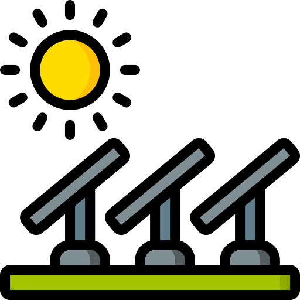
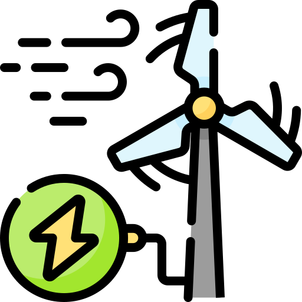
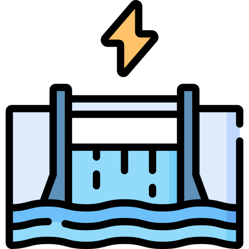
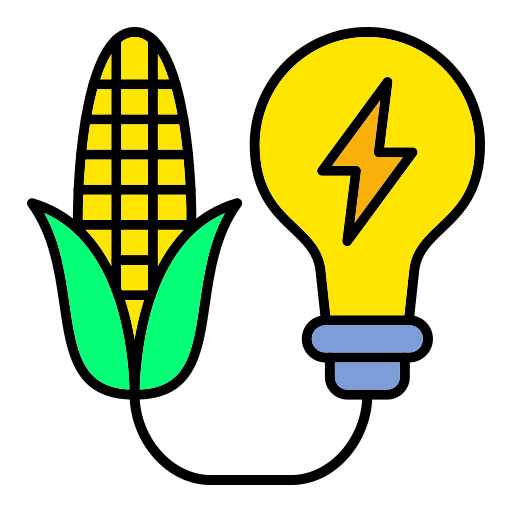
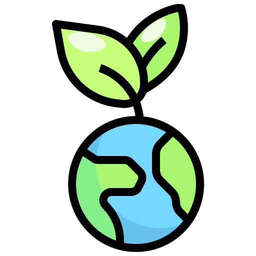

.png)
La energía es esencial para el desarrollo de cualquier sociedad, impulsando el crecimiento económico, la industrialización y el bienestar social. Históricamente, se ha dependido de fuentes no renovables como el carbón, el petróleo y el gas natural, cuya disponibilidad limitada y efectos ambientales, como la emisión de gases de efecto invernadero, presentan serios desafíos. Ante esto, las energías renovables han surgido como una solución sostenible, ya que provienen de recursos naturales que se reponen más rápido de lo que se consumen. Estas fuentes ofrecen una alternativa viable para satisfacer la demanda energética, combatir el cambio climático, diversificar la economía y proteger el planeta para las generaciones futuras.
¿Qué son las energías renovables?
Tipos de Energías Renovables
Entre los tipos principales de energías renovables, se destacan los siguientes:
Solar
Esta fuente aprovecha la radiación electromagnética emitida por el sol, la cual puede convertirse en electricidad a través de paneles fotovoltaicos o utilizarse para generar calor en sistemas termosolares, con aplicaciones en la producción de electricidad, calefacción y refrigeración.1 La energía solar es la más abundante de todas las fuentes energéticas y su tecnología se ha vuelto cada vez más asequible.
Eólica
Se basa en la captura de la energía cinética del viento mediante turbinas eólicas, transformándola en energía mecánica que a su vez acciona generadores para producir electricidad. Los parques eólicos pueden ubicarse en tierra o en el mar. El potencial técnico de la energía eólica a nivel mundial supera la producción global de electricidad.
Hidroeléctrica
Aprovecha la energía del agua en movimiento, generalmente desde elevaciones más altas a más bajas, para hacer girar turbinas conectadas a generadores que producen electricidad. Puede generarse a partir de embalses o del flujo directo de ríos. La hidroelectricidad es actualmente la mayor fuente de energía renovable en el sector eléctrico.
Geotérmica
Utiliza el calor interno de la Tierra, que se extrae de reservorios geotérmicos a través de pozos u otros medios. Este calor puede emplearse directamente para calefacción y refrigeración o para generar electricidad en plantas geotérmicas. La tecnología para la generación de electricidad a partir de reservorios hidrotermales es madura y confiable.
Biomasa
Comprende la materia orgánica de origen vegetal o animal que puede quemarse directamente o convertirse en combustibles líquidos o gaseosos (biocombustibles) para generar calor o electricidad.Incluye madera, residuos agrícolas, residuos sólidos urbanos y biogás.
Ventajas y Desventajas de las Energías Renovables: Un Análisis desde el Triple Bottom Line
Sin embargo, al igual que cualquier tecnología, las energías renovables tienen tanto ventajas como desventajas, por lo que es importante evaluar sus impactos en áreas clave como el medio ambiente, la sociedad y la economía. Esta evaluación permite tomar decisiones informadas sobre su adopción y uso, considerando tanto sus beneficios como los posibles desafíos que pueden implicar. A continuación, se detallan las principales ventajas y desventajas de las energías renovables, organizadas según el enfoque del Triple Bottom Line (TBL), que aborda los impactos ambientales, sociales y económicos.

Ambiental

Social
Economico
A diferencia de las fuentes no renovables, que presentan limitaciones importantes en disponibilidad y sostenibilidad, las energías renovables ofrecen múltiples ventajas. !Haz clicl en el boton! Para ver y comparar ambos tipos de energía en distintos aspectos clave para entender mejor sus beneficios y desafíos.